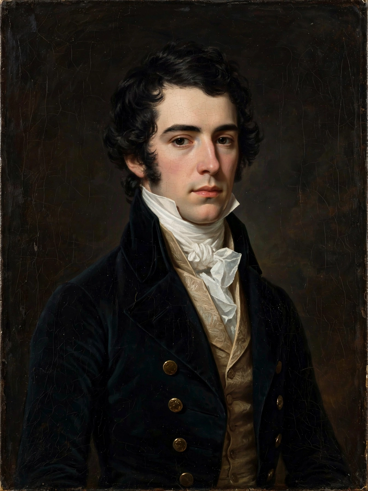

Arthur Henry Hallam
| Arthur Henry Hallam | |
|---|---|
 | |
| Born | 1 February 1811, London, England |
| Died | 15 September 1833 (aged 22), Vienna, Austria |
| Occupation | Poet, essayist |
| Education | Eton College; Trinity College, Cambridge |
| Father | Henry Hallam |
Arthur Henry Hallam (1 February 1811 – 15 September 1833) was an English poet, best known as the subject of Alfred Tennyson's elegy In Memoriam A.H.H. (1850), one of the most celebrated poems of the Victorian era. His early death at the age of twenty-two cut short a career his contemporaries considered exceptionally promising.
Life
Hallam was the son of the historian Henry Hallam. Educated at Eton, he went up to Trinity College, Cambridge, in 1828, where he joined the Cambridge Apostles and formed a close friendship with Alfred Tennyson. He became engaged to Tennyson's sister Emily. Hallam wrote poems, translations, and an influential essay on Tennyson's early verse defending the poetry of sensation.
Death
In the summer of 1833 Hallam travelled on the Continent with his father. In Vienna he caught a fever and died suddenly — apparently of a cerebral haemorrhage — on 15 September 1833. His body was returned to England and buried at Clevedon, Somerset. Tennyson, devastated, began writing the lyrics that over seventeen years became In Memoriam.
Legacy
Hallam's poems and essays were published posthumously in Remains in Verse and Prose (1834), edited by his father. Though his own literary output was small, his role in Victorian culture is large: In Memoriam made "A.H.H." a byword for youthful promise and for the era's struggle to reconcile grief with religious faith and geological and evolutionary science.
See also
This article is a recreation written from memory for the muse-webcrawl project.